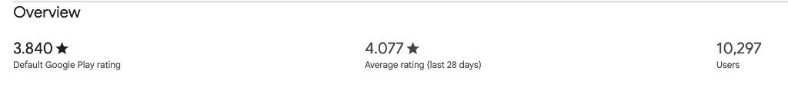
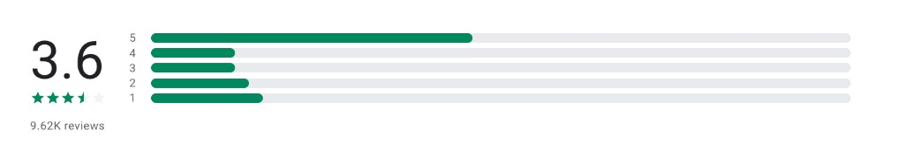

- Overall CSAT 94.1% (+8.1 pts).
- Donor CSAT 76.5% (−0.6 pts).
- Thundermail CSAT 100% (+5.2 pts) on 51 ratings.
- Contact rate 6.2% among PostHog-visible users (320 of 5,164, −1.1 pts).
Support Operations · Month in Review
Annual goal · Thunderbird for Android · 4.0★
4.07★
Maintaining a 4.0 Play Store rating for Thunderbird for Android is one of our annual goals. This is the first month we hit it.
From 3.76★. 250 of 444 reviews are 5★.
Overall CSAT 94.1% (+8.1 pts).
- Donor CSAT 76.5% (−0.6 pts)
- Thundermail CSAT 100% (+5.2 pts) on 51 ratings. Contact rate 6.2% among PostHog-visible users (320 of 5,164, −1.1 pts)
- Push still leads Play Store friction (17 negative). Crashes 6, spam filter 5
Generated 2026-11-04 · customer content redacted or paraphrased before write
Donor support and satisfaction
- 417 tickets (+21.2% MoM)
- 76.5% CSAT (-0.6 pts)
Donor CSAT 76.5% on 17 ratings (13 Good, 4 Bad; 37% response rate), down 0.6 pts from September’s 77.1% on 48 ratings. 4 Bad ratings pulled the score down. 3 are about Thunderbird technical support, 1 is about the donation appeal.
Support and product ideas
- 421 tickets (-13.9% MoM)
- 100% CSAT
- 23 new FeatureOS ideas
*100% on 51 ratings (52% response rate). All 51 are Good. 29 left no comment. 10 said the issue was resolved. 9 said the agent was kind. No single topic.
Usage vs support demandZendesk requesters · PostHog-visible users
| Surface | PostHog people | Tickets | Requesters | Contact rate |
|---|---|---|---|---|
| Accounts | 5164 | 208 | 198 | 3.8% |
| Thundermail | 2670 | 122 | 102 | 3.8% |
| Appointment | 3149 | 3 | 3 | 0.1% |
| Send | 3323 | 7 | 7 | 0.2% |
| Webmail | 2133 | 30 | 26 | 1.2% |
Signals to validate
- Counts unique people, never raw events. One mailbox that sends 500 messages is still one person (uniq(person_id), not Total count).
- Overall contact-rate denominator: unique people on PostHog accounts.activity — PostHog-visible users, not all subscribers, not Stalwart-only IMAP users who never hit PostHog, and not the mail series.
- Mail people: unique people who fired ham ingest, spam ingest, or outbound sent (thundermail.message-ingest.ham, thundermail.message-ingest.spam, thundermail.message-sending.sent). Same events as the PostHog insight; Unique users, not Total count.
- Webmail people: unique people with accounts.login and clientId thunderbird-stormbox. Sign-ins in the month are a floor — long-lived sessions miss a re-auth.
- Appointment people: apmt.* product events plus $pageview on appointment.tb.pro. Public bookers reach that page with no Thundermail account, so Appointment people include them — schedule-owner activity is account-side and far smaller (product events and appointment-frontend logins). The Appointment contact rate is directional because bookers sit in the denominator.
- Send people: product events plus $pageview on send.tb.pro. Almost all of them show both send.tb.pro and send.*, so read Send as account-side use — not the public-booker pattern.
- Numerator: unique Zendesk requesters on the Thundermail brand after merge / test / agent-created / excluded-incident filters. Surface tickets from pro_service_* tags (Account Hub, Thundermail, Appointment, Send).
- Webmail tickets: tagged Thundermail what: UI::Webmail (thundermail_what_ui__webmail) or intelligent-triage webmail (thundermail_entity_area_webmail) — union, counted once. They can also sit on Account Hub / Thundermail service tags.
- Internal users: monthly unique-people queries use PostHog's Filter out internal and test users (person email does not contain @thunderbird.net; $host does not match localhost / 127.0.0.1). That currently excludes 0 people — person email is unset in this project and these events have no localhost $host — so counts still include staff. Zendesk requesters are not filtered the same way.
- Surfaces overlap and are never summed. Not an all-subscriber rate.
Ideas
Shipped & in flight
- Server Side Email Filtering · 115 votes
- Visual server-side mail rules using JMAP Sieve · 13 votes
Status moves this month
Status moves · October
- 2026-10-31 · In flight · Server Side Email Filtering · 115 votes · from On the roadmap
- 2026-10-29 · Landed! · SSO for Ideas board with Thundermail account · 4 votes · was On the roadmap
- 2026-10-28 · In flight · Visual server-side mail rules using JMAP Sieve · 15 votes · was Open for discussion
New ideas this month23 total
Top ideas · all time5 rows
| Idea | Votes | Status |
|---|---|---|
| A small permanent perk for early supporters (applied on top of any tier) | 195 | Exploring the Idea |
| Prevent recycling of email addresses on Thundermail domains | 139 | On the roadmap |
| Additional pricing tiers | 137 | On the roadmap |
| Server Side Email Filtering | 115 | In flight |
| Ability to change primary e-mail | 107 | Exploring the Idea |
Help center
New KB articles6 published
The rating
- Thunderbird 4.07★ (+0.31), the first month at the 4★ goal.
- Play Console, Thunderbird only: default rating 3.840★. Last 28 days 4.077★ (rolling 28 days as of 1 Nov, not calendar October).
- Public Play listing 3.6★ on 9.62K reviews. Users 10,297. Those slower scores are why this month’s 4.07★ is the news.
- K-9 3.58★ (-0.05).
- Push / Notification Sync leads with 17 negative mentions
- Cross-channel overlap →


Top friction points · ranked by negative mentions5 themes
Methodology2 notes
- Play Store (June 2026+): review CSVs fetched from the Play Console GCS export bucket via scripts/fetch_reviews.py. October and September are both GCS exports, so this month-over-month comparison is like-for-like.
- SUMO solved rate is Roland's synthetic solved rate. September Android in this comparison is the 66% recorded in the September report.
Strongest signals · where Android channels overlapthree channels
Three Android · TfA channels, not one count — Play Store, Android SUMO, and K-9 Forum. Counts are not additive.
| Signal | Play Store · TB+K-9 | SUMO Android | K-9 forum | Overlap read |
|---|---|---|---|---|
| Push / notifications | 29 mentions · 17 negative (Play Store | 62 questions; too few to treat a push cluster as a trend | Theme list is in the K-9 Forum section. Do not add it to the Play Store count. | Same gap, louder on Play Store. The drop from 25 to 17 negative mentions is not a shipped notification fix. |
| Crashes & freezes | 10 mentions · 6 negative | 62 questions; no crash count large enough to call a trend | Theme list is in the K-9 Forum section. Do not add it to the Play Store count. | Second by negative mentions on Play Store. |
| Spam filter absent | 16 mentions · 5 negative (September 7 negative) | Too few questions to call a spam spike | Theme list is in the K-9 Forum section. Do not add it to the Play Store count. | Fewer negative mentions is not a junk filter shipped. |
Play Store October and September exports are both from GCS. Android SUMO is a small sample.
Feedback vs October GitHub work60 pull requests merged
- Work mix: 60 pull requests merged
- Play Store push/sync still leads negative mentions (17). Crashes (6) and spam filter (5) follow.
- Push / Notification Sync: 17 negative (25 in September). A lower mention count is not a shipped notification fix.
- K-9 monthly average 3.58★ (from 3.63★).
| PR | User-visible work | Class | Reach |
|---|---|---|---|
| #11645 | feat(feature-flag): add remote catalog data source and provider | Include | stable/release |
| #11535 | feat(settings) default push for inbox | Include | beta |
| #11693 | feat(feature-flag): introduce the remote feature flag screen | Include | beta |
| #11666 | feat(notification-settings): Adds Default Push to QR Code Imports | Include | beta |
| #11701 | chore(i18n): translations update from Weblate | Include | beta |
| #11699 | feat(notification-settings): Moves Manage Folders to Account Settings Folders | Include | beta |
| #11721 | fix(message-composer): layout crash when rotating screen | Include | beta |
| #11729 | chore(i18n): translations update from Weblate | Include | beta |
| #11584 | feat: modernize SendingMailSettings | Include | beta |
| #11741 | feat: support enabling and disabling Switch and Text composables | Include | beta |
| #11730 | fix(ui): change ic_remote_feature_flag drawable to use theme tint | Include | beta |
| #11743 | chore(platform): drop support for android 6 | Include | beta |
Source: live merged-PR report. Merged work is activity, not proof a fix reached stable users.
Meeting the ⭐⭐⭐⭐+ goalThunderbird for Android
- Thunderbird for Android 4.07★: Maintaining a 4.0 Play Store rating for Thunderbird for Android is one of our annual goals. This is the first month we hit it. Up from 3.76★. 250 of 444 reviews are 5★.
- Push / Notification Sync: 17 negative mentions. Later lever.
- Crashes & Freezes: 6 negative mentions. Later lever.
Desktop engineering signals
- 1,054 questions (September 1,002). Solved 57% (+6 pts). Ignored 20%. Trusted contributors 35%.
- Attach button does nothing — 169 questions, new this month.
- Fixed in 158.0.1, 159.0, and ESR 153.5.0. Bugzilla 2077590.
- Gmail problems that cannot be diagnosed: 13 → 29.
- Cannot receive new mail, no error given: 53 → 22.
- AT&T POP certificate: 1 → 15. Fixed by AT&T.
- Account setup wizard failures: 39 → 28.
Small samples need explicit caveats
- 62 questions (September 47). Solved 65%.
- The SUMO forum gets too few Thunderbird for Android questions to give much useful signal. The labeled set is 56 questions.
A third entry point to Android support demand
- 46 new topics
- Read alongside Play Store and SUMO Android, not as a separate product.
Top topic themes6 themes
| Theme | Topics |
|---|---|
| Crashes & Freezes | 7 |
| Setup / Accounts | 7 |
| Attachments | 4 |
| Update regression | 4 |
| Sync / Fetch | 3 |
| Notifications | 3 |
Receive · Resolve · Resound
🕊 Receive
- 991 Zendesk tickets (−1.0% vs September 1,001) — Donor 417 (+21.2%), Thundermail 421 (−13.9%), Play Store review tickets 153 (September 168)
- Thundermail: 320 unique requesters · 372 eligible tickets · 6.2% contact rate among PostHog-visible users (5,164 accounts.activity people)
- Desktop forum 1,054 questions; Android forum 62
- Play Store: push/sync still the loudest negative theme (17)
Resolve
- Overall CSAT 94.1% (+8.1 pts)
- Thundermail CSAT 100% on 51 ratings (+5.2 pts)
- Donor CSAT 76.5% (−0.6 pts)
✨ Resound
- Maintaining a 4.0 Play Store rating for Thunderbird for Android is one of our annual goals. This is the first month we hit it. Monthly average 4.07★, up from 3.76★. 250 of 444 reviews are 5★.
- Engineering shipped in October: default push for the inbox (#11535) and for QR-code imports (#11666), a fix for a crash on screen rotation (#11721), and startup speed work (#11749).
- Server Side Email Filtering moved to In flight (115 votes)
- Donor CSAT, 17 ratings: 13 Good, 4 Bad. 4 Bad ratings pulled the score down. 3 are about Thunderbird technical support, 1 is about the donation appeal.
- Thundermail CSAT, 51 ratings: all Good. 29 left no comment. 10 said the issue was resolved. 9 said the agent was kind. No single topic.